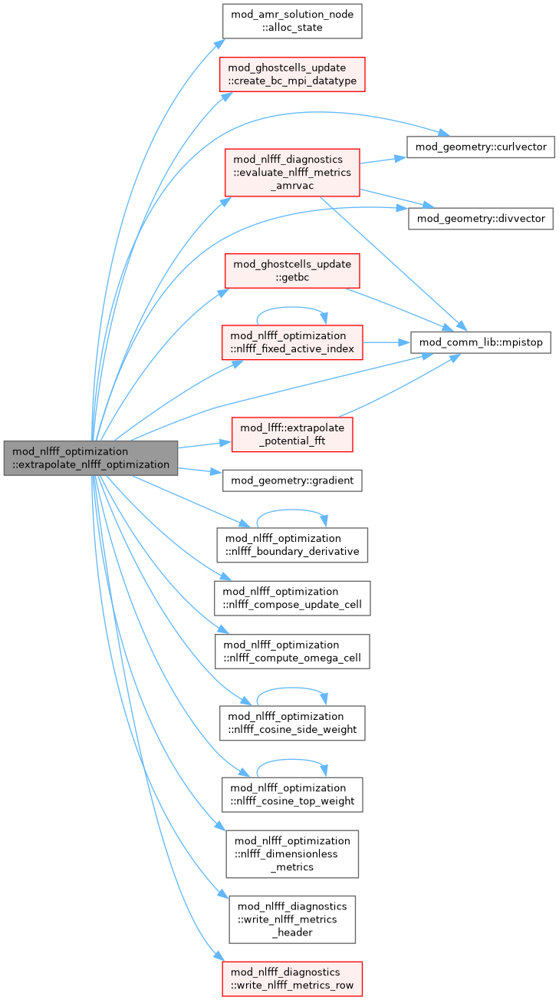
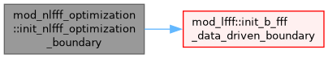
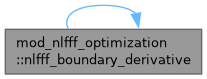
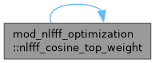
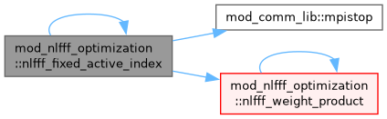
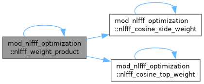

Nonlinear force-free extrapolation by the weighted optimization method. More...
Data Types | |
| type | nlfff_optimization_config |
| type | nlfff_optimization_result |
Functions/Subroutines | |
| subroutine, public | init_nlfff_optimization_boundary (filename, qlunit, qbunit, qxc1, qxc2) |
| Read one Python V1 data-driven vector magnetogram. The same read also initializes mod_lfff's normalized Bz data for the potential FFT. | |
| subroutine, public | extrapolate_nlfff_optimization (iw_b, config, result) |
| Perform a one-shot, fixed-grid weighted optimization extrapolation. | |
| pure double precision function, public | nlfff_boundary_derivative (f0, f1, f2, h, at_low) |
| pure subroutine, public | nlfff_compute_omega_cell (b, j, divb, omega_a, omega_b) |
| pure subroutine, public | nlfff_compose_update_cell (b, j, divb, omega_a, omega_b, q, s, curl_q, grad_s, grad_w, weight, ftilde) |
| Pointwise terms in Equations (13) and (15) of Wiegelmann (2004). Derivatives and Q=Omega_a x B, s=Omega_b dot B are supplied by the caller so this kernel stays independent of a particular stencil. | |
| pure subroutine, public | nlfff_dimensionless_metrics (lforce, ldiv, b2integral, characteristic_spacing, epsilon_force, epsilon_div) |
| pure double precision function, public | nlfff_cosine_side_weight (index, ncell, buffer_cells) |
| pure double precision function, public | nlfff_cosine_top_weight (index, ncell, buffer_cells) |
| pure double precision function, public | nlfff_weight_product (index1, index2, index3, ncell1, ncell2, ncell3, buffer_cells) |
| pure logical function, public | nlfff_fixed_active_index (index1, index2, index3, ncell1, ncell2, ncell3) |
Variables | |
| type(nlfff_optimization_timing), save | optimization_timing |
Detailed Description
Nonlinear force-free extrapolation by the weighted optimization method.
The implementation follows Equations (10), (13), (15), and (17) of Wiegelmann (2004), Solar Physics 219, 87, using fixed nodal physical boundaries and explicit adaptive-step controls.
Function/Subroutine Documentation
◆ extrapolate_nlfff_optimization()
| subroutine, public mod_nlfff_optimization::extrapolate_nlfff_optimization | ( | integer, dimension(3), intent(in) | iw_b, |
| type(nlfff_optimization_config), intent(in) | config, | ||
| type(nlfff_optimization_result), intent(out) | result ) |
Perform a one-shot, fixed-grid weighted optimization extrapolation.
Definition at line 119 of file mod_nlfff_optimization.t.

◆ init_nlfff_optimization_boundary()
| subroutine, public mod_nlfff_optimization::init_nlfff_optimization_boundary | ( | character(len=*), intent(in) | filename, |
| double precision, intent(in) | qlunit, | ||
| double precision, intent(in) | qbunit, | ||
| double precision, intent(in), optional | qxc1, | ||
| double precision, intent(in), optional | qxc2 ) |
Read one Python V1 data-driven vector magnetogram. The same read also initializes mod_lfff's normalized Bz data for the potential FFT.
Definition at line 107 of file mod_nlfff_optimization.t.

◆ nlfff_boundary_derivative()
| pure double precision function, public mod_nlfff_optimization::nlfff_boundary_derivative | ( | double precision, intent(in) | f0, |
| double precision, intent(in) | f1, | ||
| double precision, intent(in) | f2, | ||
| double precision, intent(in) | h, | ||
| logical, intent(in) | at_low ) |
Definition at line 1140 of file mod_nlfff_optimization.t.

◆ nlfff_compose_update_cell()
| pure subroutine, public mod_nlfff_optimization::nlfff_compose_update_cell | ( | double precision, dimension(3), intent(in) | b, |
| double precision, dimension(3), intent(in) | j, | ||
| double precision, intent(in) | divb, | ||
| double precision, dimension(3), intent(in) | omega_a, | ||
| double precision, dimension(3), intent(in) | omega_b, | ||
| double precision, dimension(3), intent(in) | q, | ||
| double precision, intent(in) | s, | ||
| double precision, dimension(3), intent(in) | curl_q, | ||
| double precision, dimension(3), intent(in) | grad_s, | ||
| double precision, dimension(3), intent(in) | grad_w, | ||
| double precision, intent(in) | weight, | ||
| double precision, dimension(3), intent(out) | ftilde ) |
Pointwise terms in Equations (13) and (15) of Wiegelmann (2004). Derivatives and Q=Omega_a x B, s=Omega_b dot B are supplied by the caller so this kernel stays independent of a particular stencil.
Definition at line 1169 of file mod_nlfff_optimization.t.
◆ nlfff_compute_omega_cell()
| pure subroutine, public mod_nlfff_optimization::nlfff_compute_omega_cell | ( | double precision, dimension(3), intent(in) | b, |
| double precision, dimension(3), intent(in) | j, | ||
| double precision, intent(in) | divb, | ||
| double precision, dimension(3), intent(out) | omega_a, | ||
| double precision, dimension(3), intent(out) | omega_b ) |
Definition at line 1151 of file mod_nlfff_optimization.t.
◆ nlfff_cosine_side_weight()
| pure double precision function, public mod_nlfff_optimization::nlfff_cosine_side_weight | ( | integer, intent(in) | index, |
| integer, intent(in) | ncell, | ||
| integer, intent(in) | buffer_cells ) |
◆ nlfff_cosine_top_weight()
| pure double precision function, public mod_nlfff_optimization::nlfff_cosine_top_weight | ( | integer, intent(in) | index, |
| integer, intent(in) | ncell, | ||
| integer, intent(in) | buffer_cells ) |
Definition at line 1234 of file mod_nlfff_optimization.t.

◆ nlfff_dimensionless_metrics()
| pure subroutine, public mod_nlfff_optimization::nlfff_dimensionless_metrics | ( | double precision, intent(in) | lforce, |
| double precision, intent(in) | ldiv, | ||
| double precision, intent(in) | b2integral, | ||
| double precision, intent(in) | characteristic_spacing, | ||
| double precision, intent(out) | epsilon_force, | ||
| double precision, intent(out) | epsilon_div ) |
Definition at line 1182 of file mod_nlfff_optimization.t.
◆ nlfff_fixed_active_index()
| pure logical function, public mod_nlfff_optimization::nlfff_fixed_active_index | ( | integer, intent(in) | index1, |
| integer, intent(in) | index2, | ||
| integer, intent(in) | index3, | ||
| integer, intent(in) | ncell1, | ||
| integer, intent(in) | ncell2, | ||
| integer, intent(in) | ncell3 ) |
Definition at line 1262 of file mod_nlfff_optimization.t.

◆ nlfff_weight_product()
| pure double precision function, public mod_nlfff_optimization::nlfff_weight_product | ( | integer, intent(in) | index1, |
| integer, intent(in) | index2, | ||
| integer, intent(in) | index3, | ||
| integer, intent(in) | ncell1, | ||
| integer, intent(in) | ncell2, | ||
| integer, intent(in) | ncell3, | ||
| integer, intent(in) | buffer_cells ) |
Definition at line 1251 of file mod_nlfff_optimization.t.

Variable Documentation
◆ optimization_timing
| type(nlfff_optimization_timing), save mod_nlfff_optimization::optimization_timing |
Definition at line 74 of file mod_nlfff_optimization.t.
Generated by